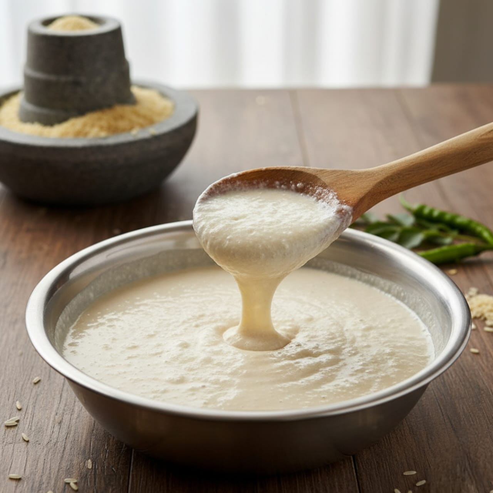
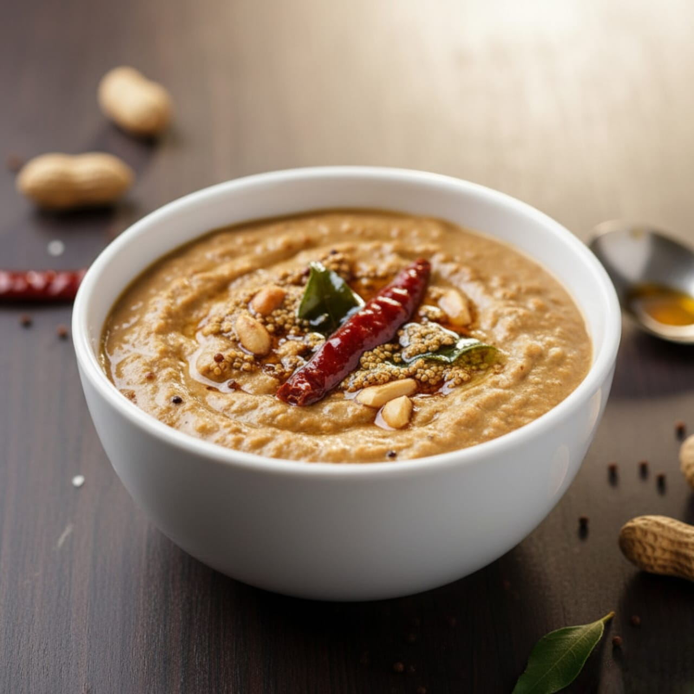
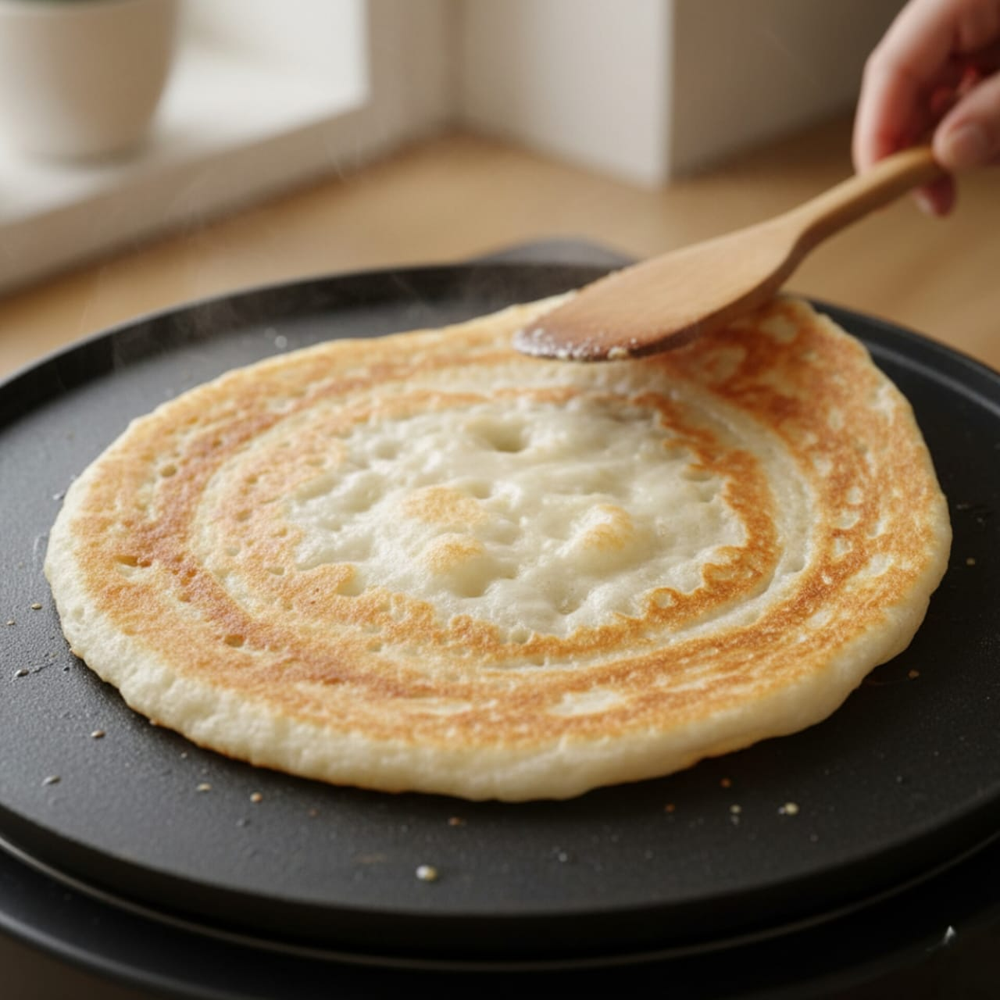

Soak Ingredients: Wash and soak rice,
urad dal, fenugreek seeds, and poha in water for 4–6 hours.
Grind Batter: Drain soaked ingredients.
Grind them into a smooth paste using water as needed for a
thick pourable consistency.
Fermentation: Leave the batter in a warm
place for 6–8 hours or overnight until slightly airy.
Add Salt & Mix: Before cooking, add salt
to taste and mix well.

Part-II Chutney prep
Grind Chutney: Add coconut, roasted
peanuts, green chillies, ginger, salt, and water to a blender.
Grind to a smooth or slightly coarse paste depending on
preference.
Prepare Tempering (Tadka): Heat oil in a
small pan. Add mustard seeds → urad dal → dry red chili →
curry leaves. Fry until dal turns golden brown.
Combine: Pour tempering over the chutney
and mix well. Adjust consistency with water if needed.

Part-III Cooking
Preheat Pan: Heat a non-stick pan or
electric griddle over medium heat. Lightly grease with 1 tsp
oil.
Pour Batter: Pour a medium-thick ladle
of batter for fluffy pancakes (or thin for dosa-style crispy).
Spread evenly if needed.
Cook First Side: Wait until bubbles
appear and edges lift slightly.
Flip Pancakes and Toppings: Carefully
flip and cook the other side until golden-brown. And repeat
the same for other pancakes. Add Toppings - Sprinkle onions,
tomatoes, chillies (optional), coriander, grated carrot, and
capsicum.

Part-IV Plating and Garnishing
Place all 3 pancakes on a pre-warmed plate.
Serve with coconut and peanut chutney on the side. Garnish
with fresh cilantro or other herbs/veggies.